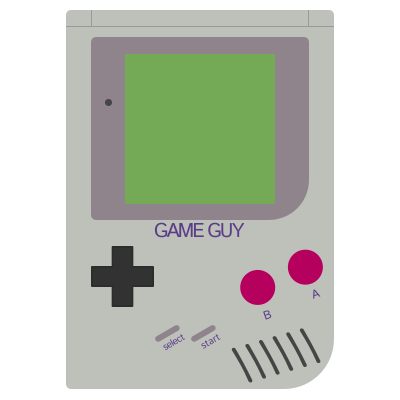

Nintendo Gameboy
Game Boy is the BEST Retro Console!
Welcome to the Game Boy article review written/coded by Rian Spangler! This article goes into fun facts, Interesting overview of the hardware and it also enlists some of the top selling games for the console! The BEST retro console! The start of the video game Pokemon!
To the Game Boy Color Article!
Welcome to the Game Boy Color article review written/coded by Jacob! A counter and upgrade to the Game Boy, what is not to love? Completely upgrading one of the first hand held consoles, with making new generations of games like Pokemon Crystal! Fun facts, overview and so much more!